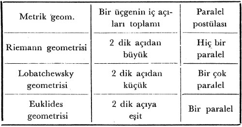

Sezgi (intuition) matematik düşüncede rol oynar mı? Ve bu sezginin mahiyeti nedir? Bu sorular matematikçiyi olduğu kadar doğrudan doğruya filozofu da uğraştırmaktadır. Fakat bunlara verilen cevaplar oldukça müphemdir. Bunun başlıca sebebi de sezgi kelimesinden neyin kastedildiğinin açıkça bilinmemesidir. Bundan dolayı her şeyden önce felsefe ve matematik tarihinde rastladığımız başlıca sezgi anlayışlarını gözden geçirelim.
1. Kelimenin etimolojik anlamı ile intuitionner (intuire) bakmak demektir. Almanca’da Anschauen aynı anlama gelir. Bundan dolayı Türkçe’de buna karşılık “kavrayış” demek belki daha doğru olurdu. Kavrayış, kavranan şeyin kavrayan özne tarafından hiçbir aracı (vasıta) olmaksızın bilinmesidir. Bunun için kavrayış, araçsız bilgidir diye tarif edilebilir. Ve böylece araçlı bilgi olan konuşmalı düşünce’nin (discursion) zıttı sayılır. Çünkü bunda sonuç birtakım öncüller ve orta terimlerle bilinmektedir.
Ortak duyu kavrayış (veya seziş) deyince, bir çeşit önceden görüşü, peşinden kavrayışı (prévision) anlar. Bu anlamda sezgi sahibi olmak, düşünceye başvurmadan, ilerde olacak olan şeyi peşinen ve birdenbire fark etmek gibidir. Mesela “Onun böyle bir adam olacağını ben sezmiştim” deriz. Fakat felsefede bu anlamı hemen hiç kullanmayacağız.
Eğer kavrayış nesnenin özne tarafından araçsız olarak alınması demekse, özne çeşitleri kadar da kavrayış çeşitleri olması gerekir. Böylece duyu kavrayışı, zihin kavrayışı, duygu kavrayışı, şuuraltı kavrayışı vs’yi ayırmalıyız. Mesela gök mavisini görmek birincisine, küre veya dörtgen fikri ikincisine, şefkat veya kin hallerini kavramak üçüncüsüne, şuurumuzun yüzünde cereyan etmeyen ruh hallerinin kavranması dördüncüsüne aittir. Kant, transandantal mantığında birinci anlamdaki kavrayışı ele alıyordu. Descartes ise, tamamen ikinci anlam üzerinde durmakta ve bütün matematiği buradan çıkarmaktadır. Bunlara bir de Bergson’un en derin ruhi gerçeği “kavrayış” anlamında aldığı ve zekâya zıt olarak mutlak’a çevrilmiş bir yetiden ibaret gördüğü sezgi veya kavrayışı katmalıdır ki, buna metafizik kavrayış veya sezgi diyebiliriz.
Matematikte ilk iki kavram da kullanılır. Mesela geometrideki nokta ve düz çizgi kavramları birer sezgidir. Matematik her ne kadar noktayı boyutsuz, çizgiyi kalınlıksız diye kabul ederse de, bunların duyu kaynaklarını göstermek kabildir. Bir iğne deliğinden geçen ışığa yahut birbirini kesen iki çizgiye, bir toz tanesine bakalım.

Burada görmekle görmemek arasındaki belirsiz sınır nokta sezgisidir. Çizgi için de buna benzer bir tecrübe yapabiliriz. Matematik kavramlardan çoğu vakıa bize soyut ve duyulardan çok uzak görünüyorlar. Fakat onların tatbikatta tecrübe ile ilişkileri görülebilir. Legendre, geometrisinin ilk önermelerinde bunu ifade ediyor: “Bir cismin yüzü onu bitişik mekândan ayıran limittir.” Bu tamamen Farabî’nin mekân tanımını hatırlatıyor. Bu ilk geometri önermesi mutlak hakikati ifade etmez. Ancak her fizik kanunu gibi takribi bir hakikat ifade eder. Atom fiziğine bakacak olursak, iki maddi çevre arasında bir ayırış yüzeyi düşünmek saçma olur. İlk kavramları ile karşılaştığımız bu geometri -her türlü aksiyomlaştırma gayretinden önce- bir çeşit tecrübi ilimdir: Önermeler ve prensipler idealleştirilmiş fizik tecrübelerdir (Gonseth’e göre mantık bile “herhangi bir nesnenin fiziğidir (Qu’est ce que la logique?). Ona göre “Bir geometri teoremi kadar kesin” sözü tamamen yanlıştır. Bunun yerine, “Bir geometri gibi sezgiye dayanır” demek daha doğru olur.
Matematik akıl yürütme duyulara ait tecrübeden nasıl çıkar? Bir doğrultunun dışındaki bir noktadan bu doğrultuya bir ve yalnız bir dikey çizilebilir, teoremini ele alalım. Bu teorem tamamen tecrübi bir şekilde gerçekleştiriliyor. Çünkü çizilen dikeyden başkasının olamayacağı fiilen gösteriliyor. Gonseth’e göre bu ispat ancak idealleştirilmiş olan basit bir tasvirden ibarettir. Nitekim fizik de aynı yoldan hareket etmektedir. Fakat bu tarzda bir duyu sezgisinin matematik sonuçlama değeri şüphe götürür. Bir üçgenin zihnen kavranması bir bakışta nesnemizin üç çizginin birbirini kesmesinden meydana geldiğini “görmek” demektir. Fakat bu matematikçi için yetmez. Matematikçi bir münasebetler sistemini kavrar. Zihnin bir hayal veya bir matematik nesne karşısındaki durumu aynı değildir. Zihin kavrayışı aktiftir, onunla münasebetler kavranmaktadır. Descartes’ın matematiğe esas olarak aldığı “zihni sezgi” veya “kavrayış” işte bu ikincisidir.
2. Bugünkü matematikte sezgi kelimesi yeni bazı anlamlar almaya başlamıştır. Bouligand matematik çalışma içinde sezginin oynadığı türlü rolleri tahlil etti. Hilbert’le öğrencilerinin, mantıkçılar ve aksiyomcuların matematikten sezgiyi kaldırmak istemelerinin imkânsız olduğunu gösterdi (O bu hususta H. Poincaré’nin asır başında mantıkçı matematiğe karşı sezgici matematiği savunmak için yaptığı büyük gayretleri tamamlamaktadır). Ona göre sezgi dedüktif kuramların bünyesini aydınlatmak için de işe karışmaktadır. Bazen gizli öncülleri meydana çıkarmak için aksiyomatikçiye lazımdır. Fakat bunların dışında bugünkü araştırmalarda bir de Brouwer’in anladığı matematik sezgi vardır. Bu görüş formel mantık içerisinde meydana çıktı. Matematik alanında üçüncü terimin yokluğu prensibini reddederek başladı (Bu soruya biraz sonra matematik paradokslar ve üçüncü terimin yokluğu sorusunu savunurken döneceğiz).
Eğer sezgi sırf duyu kavrayışından ibaretse, soru formalizm lehine halledilebilecektir. O zaman Einstein gibi “Matematik teoremler gerçeğe tatbik edildiği müddetçe tam geçerlikleri yoktur ve tam bir geçerlikleri olduğu müddetçe de gerçeğe tatbik edilemezler” denebilir.[84] Bu görüş tarzı duyu sezgisinin sistematik olarak reddedilmesi fikriyle uyuşamaz. Çünkü bu görüş yalnızca saf matematikte geçer, yoksa tatbiki matematikte değil. Mühendisin matematiği bundan vazgeçemez.
Fakat sezgi Descartes veya Kant’ın anladıkları anlamda (yani gerek zihin, gerek duyu sezgisi halinde) anlaşılacak olursa, her iki görüş de matematik bilgimizi ilerleten başlıca âmil sayarlar ve formel mantığın (Aristoteles mantığının) kısırlığına karşın, onun verimliliğini kabul ederler.
Bu fark nereden geliyor? Neye delalet eder? Bu noktaya iki tarzda cevap verebiliriz:
1. Matematik bir veri ilmidir, fakat bu veri bir duyu verisi değildir. Zekâ tarafından kavranan ideal bir varlığın verisidir. Descartes’a göre aklın kavradığı birtakım basit özler vardır. Dedüksiyon (sonuçlama) bunların hassalarını meydana çıkarabilir. Kant’a göre, matematikle incelenen ve duyu izlenimlerini kadrolayan bir saf sezgi vardır. Fakat ne Descartes’ın “basit öz”leri, ne Kant’ın “saf sezgi”si psikolojik zihin işlemlerine indirgenemez.
2. Matematik her iki filozofa göre de sentez ile işler. Halbuki yeni mantıkçı görüşe, mesela Peano’ya, B. Russell’a göre, o analiz ile işler. Bu iki görüşten ikincisi daha yeni, çok daha yaygın, sanki günün modası haline gelmiş olmasına rağmen, ona katılmak çok güçtür. Matematik ispatın sentezi ne derecede kullandığını görmüştük. Buna karşı formel mantığın Eski Yunan’dan beri kullanılan şeklinin sırf analitik olduğunu biliyoruz. Aristoteles mantığı tabiat ilimlerinin (kendi zamanındaki) sınıflandırmalarına, cins ve tür fikirlerine dayanarak meydana gelmiştir. Euklides geometrisi gibi duyu verileriyle kavradığımız statik gerçeğe, Bergson’un deyişi ile katı cisimler gerçeğine dayanmaktadır. Halbuki yeni mantıklar ya matematiğe ya da tesadüf olaylarına aittirler, yeni geometriler gibi doğrudan doğruya gerçekte karşılıkları olmayan soyut sistemler değildir. Böyle olmakla beraber yeni mantıklar da yeni matematikler gibi eskilerinin genişlemesinden doğmuşlardır: Nitekim eğer eskisinden daha geniş bir fizik dünyası ile karşılaşırsak (Einstein’da olduğu gibi), bu soyut matematikler yeni gerçekleri ifadeye yararlar. Halbuki kuruluşlarına yeni mantıklar tamamen formel oldukları için matematikler sentetik, ikinciler analitiktirler. Matematikte -en aza bile indirilmiş olsa- bir sezgi payı vardır. Mesela Euklidesçi olmayan bir geometri paralel postulatını terk etmek sureti ile bir sistem kurabilir. Fakat bunda dahi âlim, paralellerin bulunmadığı küre halinde bir âlem tasavvurundan hareket edebilmek için yeryüzünde yapılan géodésique incelemelerden hareket etmekte ve boylamların kutuplarda birleşmesi tecrübesine dayanarak küre halinde bir âlem tasavvuruna geçmektedir.
Formalizme karşı başlıca şu itirazlar ileri sürülmüştür:
1. Kurulmuş matematik ile kurulmakta olan matematiği ayıracak olursak, ikincisinin asla tutarlı (cohérent) mantıki bir sisteme uymadığı görülür. Kurulmakta olan matematik daima sezgilere dayanmakta, denemelerle ilerlemekte, daha önce gördüğümüz gibi, üçüncü terimin yokluğu prensibini kaldıran inşalar halinde gelişmektedir. Yalnız formelleştirmenin son çalışmaları sayesinde saf matematik ilimlerde iç tutarlık kurulabilmiştir (Bu alanda en büyük adım Hilbert’e aittir). Bununla beraber her türlü matematik keşifte[85] bu iç tutarlığın tekrar düzenlenmesi gerekir.
2. Henri Poincaré henüz formelleşmenin yeni başladığı zamanlarda şu noktayı işaret etmişti: “Lojistiğin hiçbir yeni buluşu yoktur ki, olayları basitleştirecek yerde büsbütün karıştırmamış olsun.” Bugün matematik formelleşme Poincaré’nin zamanındaki gibi değildir. Matematiğin bütün dallarına yayılacak hale gelmiştir.
Her ne olursa olsun sezgi ve mantık görüşleri matematik alanında yine her zamanki gibi çarpışmaktadır. Barışmak bilmeyen bu iki cephe arasında ne yapılabilir? Onları uzlaştırmaya mı, yoksa her zaman yapılmış olduğu gibi onlardan birini, ihtiyacımıza daha elverişli olduğu için tercih etmeye mi varmalıdır? Birinci hal yolu basit bir uzlaştırıcılık (éclectisme), ikinci hal yolu ise ondan daha çok başarılı olmayan pratik faydacılıktan (pragmatisme) ibarettir. Her ikisi ile de matematik ilimler alanında bizi hakikate götüren emin bir yol tutulmuş gibi görünmemektedir. Bütün matematik ilerlemelerin derece derece bir soyutlaşma, formelleşme, muhtevadan ve duyu verilerinden uzaklaşma olduğuna dikkat edilirse, burada daima temel sezgilere dayanan bir soyutlama işleminin rol oynadığı görülür. Matematik gelişme eğer aksiyomatiğin gelişmesi yardımı ile olmuşsa, bu genişleme de daima sezgilerden hareket etmeye çok şeyler borçludur. Çünkü ilk sezgilerde, mesela geometri veya hesabın bütün yeni adımlarında aksiyomatik ve mantıktan önce gelen, hatta mantığımıza mukavemet eden irrationel verilerle karşılaşmaktayız. Bu sezgileri önceki fasıllarda geometriden, cümleler kuramından (mesela sonsuz cümlelerden doğan paradokslardan) verdiğimiz misallerle açıklamaya çalışmıştık.